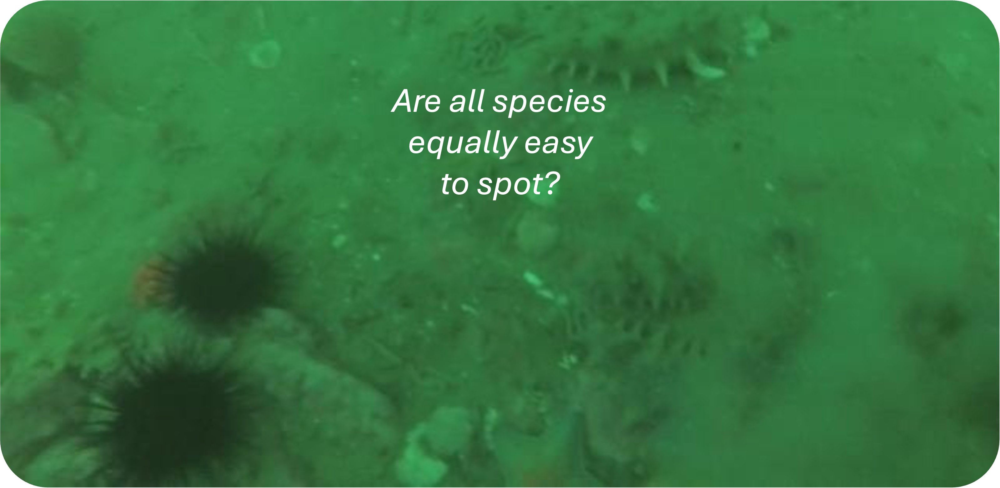
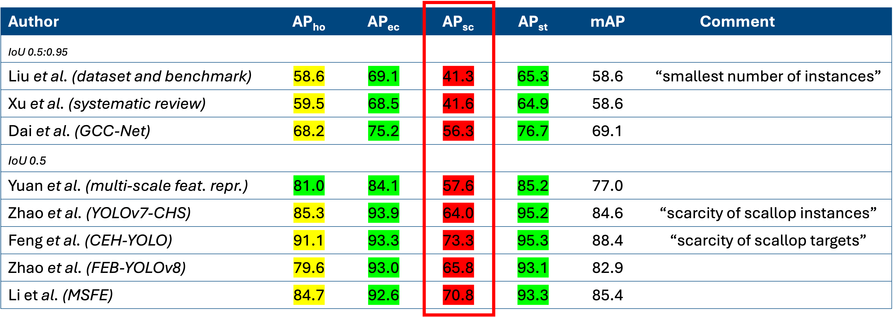
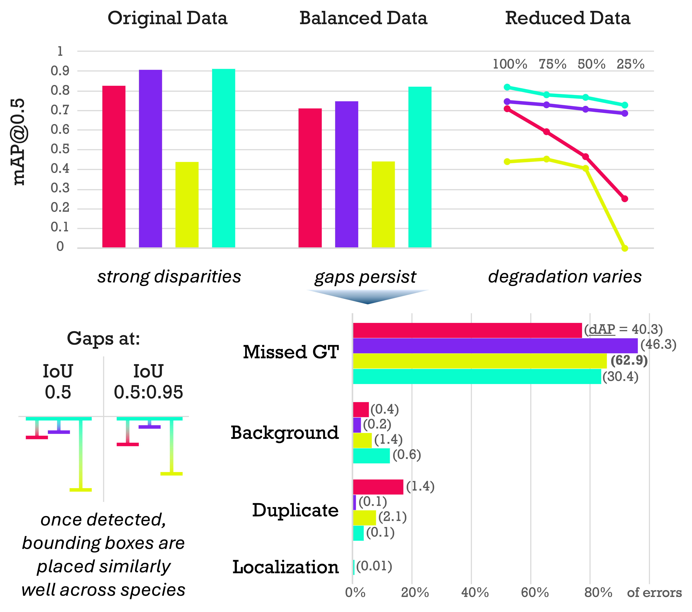
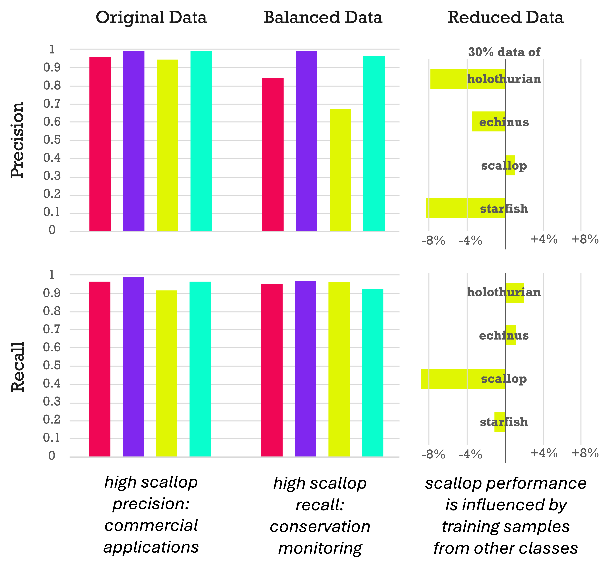
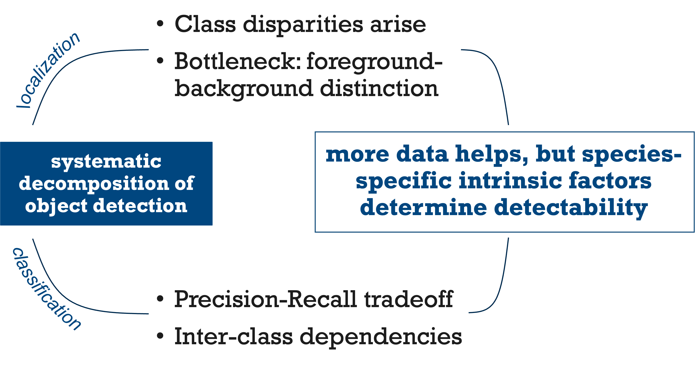

Underwater object detection is critical for monitoring marine ecosystems but poses unique challenges, including degraded image quality, imbalanced class distribution, and distinct visual characteristics. Not every species is detected equally well, yet underlying causes remain unclear. We address two key research questions: 1) What factors beyond data quantity drive class-specific performance disparities? 2) How can we systematically improve detection of under-performing marine species? We manipulate the DUO and RUOD datasets to separate the object detection task into localization and classification and investigate the under-performance of the scallop class. Localization analysis using YOLO11 and TIDE finds that foreground-background discrimination is the most problematic stage regardless of data quantity. Classification experiments reveal persistent precision gaps even with balanced data, indicating intrinsic feature-based challenges beyond data scarcity and inter-class dependencies. We recommend imbalanced distributions when prioritizing precision, and balanced distributions when prioritizing recall. Improving under-performing classes should focus on algorithmic advances, especially within localization modules. We publicly release our code and datasets.

Even though healthy oceans are essential to life on Earth, marine ecosystems continue to face significant human-induced threats. Underwater object detection has become an important tool for improving environmental monitoring and supporting sustainable ocean resource management. However, accurately detecting objects in underwater imagery remains highly challenging. Poor image quality, low contrast, and visual degradation often make marine species difficult to identify. In addition, organisms frequently appear in dense clusters, occlude one another, or blend into the surrounding environment due to their small size and camouflage. These factors make it difficult to distinguish clear object boundaries and reliably detect marine life. Existing research also suggests that some species are consistently more difficult to detect than others, highlighting important performance disparities in current underwater detection systems.

Previous studies using the Detecting Underwater Objects (DUO) dataset have consistently reported lower detection performance for the scallop class compared to other marine species. While most works do not even acknowledge this gap, the few that did suggest that it is primarily caused by the limited number of scallop training instances. At first glance, this explanation appears reasonable given the strong class imbalance in DUO, where echinus dominate the dataset while scallops represent only a small minority. However, visual inspection of the images suggests that scallops may also be inherently more difficult to detect due to their appearance and tendency to blend into the environment. To the best of our knowledge, no one has conducted a systematic analysis yet, to investigate where persistent performance gaps come from – whether it is because of data quantity and class distribution or because of inherent visual characteristics of the targets - which is crucial knowledge for mitigation.
We therefore ask:
What factors beyond data quantity drive class-specific performance disparities? And how can we systematically improve detection of underperforming marine species?
To better understand the causes of class-specific performance disparities, we decompose underwater object detection into two core stages: localization and classification. For the localization analysis, we use YOLO11 as a class-agnostic detector trained on single-class versions of the DUO dataset, allowing us to isolate how effectively different marine species can be separated from the background and localized with bounding boxes. For the classification analysis, we use ResNet-18 on single-object image crops extracted from the dataset, enabling us to evaluate species recognition independently from localization errors. Our evaluation primarily relies on standard object detection metrics such as mAP, precision, recall, and F1-score. In addition, we incorporate the TIDE Toolkit to perform detailed failure analysis during localization. TIDE categorizes detection mistakes into six distinct error types
The localization experiments reveal large performance gaps between marine species, particularly during foreground-background separation. Although these disparities are partly influenced by class imbalance, they persist even in balanced datasets, showing that intrinsic visual characteristics also play a major role. While performance generally decreases with less training data, some species such as starfish remain relatively robust, whereas scallops are far more sensitive to data reduction and difficult for the model to distinguish from the background. Error analysis further shows that the most common failure is completely missing objects rather than inaccurate bounding boxes, indicating that detection difficulty — not localization precision — is the primary challenge. Classification performance is overall much stronger, but scallops still exhibit a clear precision–recall tradeoff: balanced training improves recall but lowers precision. This suggests that imbalanced setups may be preferable for commercial applications, while balanced training is better suited for conservation tasks where missing detections is more critical. Finally, scallop performance is strongly affected by reductions in other classes, indicating that the model relies on negative examples to learn clearer class boundaries for visually ambiguous species.



Overall, our findings show that species-specific visual characteristics play a critical role in underwater object detectability beyond simple data quantity. Performance disparities arise primarily during localization, where distinguishing marine organisms from the background is the main bottleneck. In the classification stage, we uncover important precision–recall tradeoffs and inter-class dependencies that can guide application-specific training strategies. We further validate these insights through architectural ablation studies and experiments on the additional RUOD dataset, providing a strong foundation for future underwater object detection research.
@InProceedings{Wille_2026_WACV,
author = {Wille, Melanie and Fischer, Tobias and Raine, Scarlett},
title = {Are All Marine Species Created Equal? Performance Disparities in Underwater Object Detection},
booktitle = {Proceedings of the IEEE/CVF Winter Conference on Applications of Computer Vision (WACV)},
month = {March},
year = {2026},
pages = {4556-4565}
}This research was supported by the QUT Centre for Robotics, QUT Digital Research Infrastructure team for HPC, and an ARC DECRA Fellowship DE240100149 to TF.